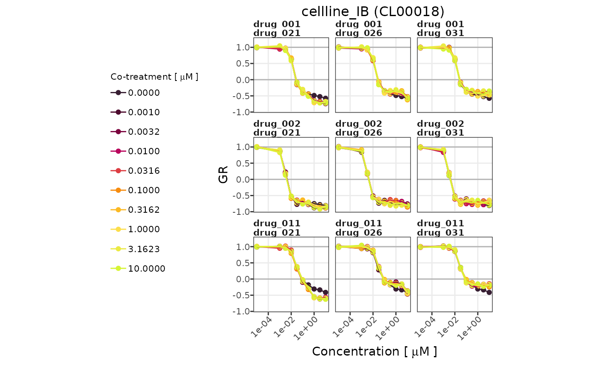
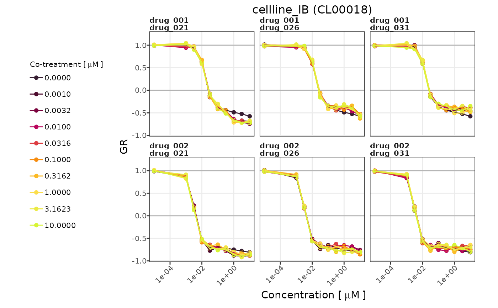

Plot panel with drug response curves for single-agent data to control quality of the data
Source:R/plot-combo-response_curve.R
plot_dose_response_combo_panel.RdPlot panel with drug response curves for single-agent data to control quality of the data
Usage
plot_dose_response_combo_panel(
dt_average,
cl_name,
d_names = NULL,
normalization_type = "GR",
colors_vec = NULL
)Arguments
- dt_average
data.table representing data from the
Averagedassay, outputted bygDRutils::convert_se_assay_to_dt(se, "Averaged")and comboSummarizedExperiment- cl_name
string with cell line name to be plotted (identifiers
CellLineName)- d_names
character vector with drug names to be plotted (Drug Name); if NULL - all available drugs will be plotted
- normalization_type
string with normalization_types to be selected one of: "GR" ("GRvalue") or "RV" ("RelativeViability")
- colors_vec
character vector with colors for
group_names- name or hex value note that the first color will be assigned to the min value ofConcentration_2, and the last one - to the max ofConcentration_2; the default is the orange-black palette
Value
ggplot object containing panel with plot with dose-response curves
for selected cell line by drugs
Examples
mae <- gDRutils::get_synthetic_data("combo_matrix")
se <- mae[[gDRutils::get_supported_experiments("combo")]]
dt_average <- gDRutils::convert_se_assay_to_dt(se, "Averaged")
cl_name <- "cellline_IB"
plot_dose_response_combo_panel(dt_average = dt_average,
cl_name = cl_name)

d_names <- c("drug_001", "drug_002")
plot_dose_response_combo_panel(dt_average = dt_average,
cl_name = cl_name,
d_names = d_names)
